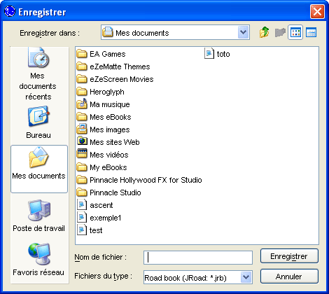

Choisir
Enregistrer ou Enregistrer sous dans le menu
Livre, une
boîte de dialogue apparaît pour vous demander saisir le nom du fichier. Le nom des fichiers road book ont l'extension .jrb. Cette extension est ajoutée automatiquement par le logiciel si elle est omise.

Une fois la sauvegarde effectuée, la petite étoile (le *) n'est plus visible au niveau de l'onglet.